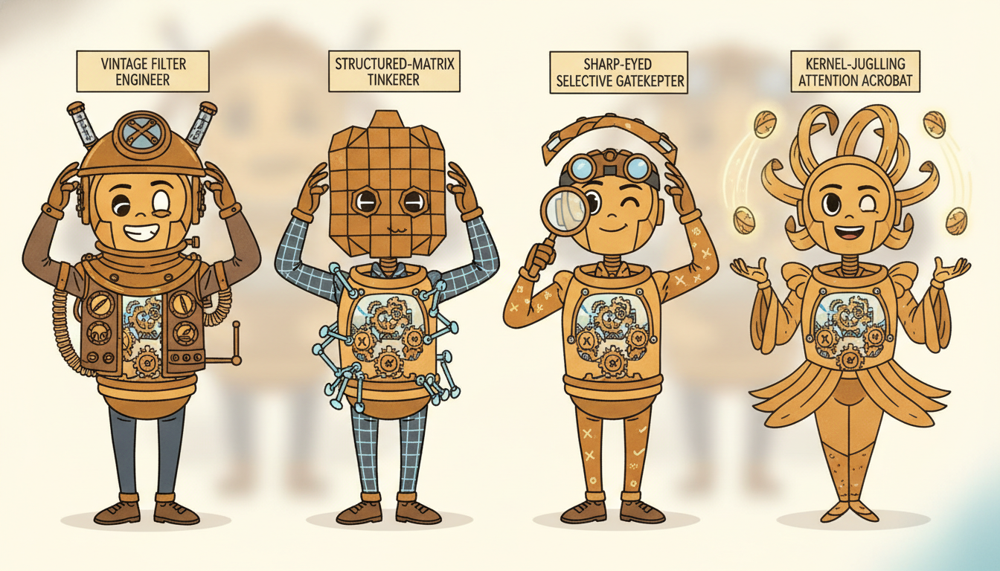

"They introduced me as a recurrent network, then as a structured state-space model, then as a linear-attention head, and once, at a party in Part II, as a Kalman filter. I kept trying to explain that it was the same hat each time, just a different brim. Nobody believed me until someone wrote down the update equation and we all turned out to be the same line of algebra."
A Recurrence Wearing Three Different Hats
The recurrent network of Chapter 10, the structured state-space model of Section 13.1 made selective as Mamba in Section 13.2, the linear-attention family (linear Transformers, RWKV, RetNet) of Section 13.3, and the Kalman filter you met in Section 7.6 are not four ideas that happen to resemble each other. They are one idea: a state $\mathbf{s}_t$ carried across time by a (possibly input-dependent) linear-or-gated update $\mathbf{s}_t = \mathbf{A}_t\mathbf{s}_{t-1} + \mathbf{B}_t\mathbf{x}_t$, read out as $\mathbf{y}_t = \mathbf{C}_t\mathbf{s}_t$. Once you see the single template, three things that looked like separate engineering tricks become one consequence of one structure. The update is linear in the state, so it can be unrolled into a parallel scan (Transformer-like training throughput) or stepped one timestep at a time (RNN-like $O(1)$-per-step, constant-memory inference): the celebrated parallel-train / recurrent-infer duality is just a property of linear recurrences. The differences between the four models, fixed versus learned, dense versus diagonal, data-independent versus selective, are differences in how $\mathbf{A}_t, \mathbf{B}_t, \mathbf{C}_t$ are parameterized, not differences in kind. And softmax attention, the one architecture in this chapter that refuses to fit, refuses for a precise reason: its "state" is the entire growing history, which buys maximal expressivity at the cost of the linear recurrence and its dualities. This section draws the template, maps each model onto it in a comparison table, explains the duality and the efficiency-expressivity spectrum it generates, gives practical guidance on which family to reach for, and instantiates the very same generic linear-recurrence skeleton as an RNN cell, a diagonal SSM, and a linear-attention step, three models sharing one interface, with a library SSM for contrast. It closes Chapter 13 and hands you to the deep forecasters of Chapter 14.
Chapter 13 has, section by section, built a tower of models that each looked like a fresh invention. Section 13.1 introduced the continuous state-space equation, its discretization, and the structured SSM S4 with its diagonal cousins; Section 13.2 made it selective and trainable as Mamba; Section 13.3 rederived attention without the softmax and arrived at linear Transformers, RWKV, and RetNet; Section 13.4 took the continuous-time view to Neural ODEs; Section 13.5 drove the dynamics with the data path as Neural CDEs. It would be easy to leave the chapter remembering a zoo. The purpose of this closing section is the opposite of accumulation: it is unification. We will show that everything in the zoo, plus the recurrent networks of Chapter 10 and the classical Kalman filter of Section 7.6, is one recurrence template seen through different parameterizations. We use the unified notation of Appendix A: $\mathbf{x}_t$ the input, $\mathbf{s}_t$ the (hidden or latent) state, $\mathbf{y}_t$ the output.
Why end a chapter with a bridge rather than one more architecture? Because the single most useful thing a practitioner can carry out of this material is not the definition of any one model but the map that places them all. Once you hold the template in your head, a new paper announcing the next acronym is no longer a thing to learn from scratch: you ask three questions, how is the state-transition $\mathbf{A}_t$ parameterized, is it input-dependent, and is the readout linear, and the paper's novelty collapses into a cell in the table you are about to build. The bridge is the compression that makes the chapter's seven sections fit in working memory, and it is the lens through which the deep forecasters of Chapter 14 and the foundation models of Chapter 15 will read as variations rather than novelties.
The four competencies this section installs are: to write the general linear-recurrence template and place RNN, SSM, linear attention, and the Kalman filter onto it as instances; to explain the parallel-train / recurrent-infer duality as a property of linear recurrences and say precisely why it gives both Transformer-like training and RNN-like inference; to locate softmax attention as the deliberate exception and reason about the expressivity-versus-efficiency spectrum; and to choose a family given sequence length, data size, irregularity, and latency. These are the organizing skills for the rest of Part III.
1. The Grand Unification: One Recurrence, Many Hats Intermediate

Strip every model in this chapter down to its load-bearing equation and the same skeleton appears. A state vector $\mathbf{s}_t$ is carried forward in time. At each step it is updated from the previous state and the current input by a map that is linear in the state, and the model's output is read off the state by another linear map. Written once, the template is two equations:
$$\mathbf{s}_t = \mathbf{A}_t\,\mathbf{s}_{t-1} + \mathbf{B}_t\,\mathbf{x}_t, \qquad \mathbf{y}_t = \mathbf{C}_t\,\mathbf{s}_t + \mathbf{D}_t\,\mathbf{x}_t.$$Here $\mathbf{s}_t \in \mathbb{R}^{n}$ is the state, $\mathbf{x}_t$ the input, $\mathbf{y}_t$ the output, and $(\mathbf{A}_t, \mathbf{B}_t, \mathbf{C}_t, \mathbf{D}_t)$ are the transition, input, output, and feedthrough operators. The subscript $t$ on the operators is the entire story of this chapter: when they are constant in $t$ the recurrence is linear time-invariant (a convolution, trainable in parallel as a single kernel); when they depend on the input $\mathbf{x}_t$ the recurrence is selective (input-dependent, the Mamba innovation of Section 13.2); and when the update is wrapped in a nonlinearity it becomes the classical RNN. Everything else, dense versus diagonal $\mathbf{A}_t$, fixed versus learned, real versus complex, is a parameterization choice inside this one frame.
The crucial qualifier is "linear in the state". The update may depend on the input however it likes, through gates, through data-dependent $\mathbf{A}_t$, through any nonlinearity of $\mathbf{x}_t$, and still belong to the template, as long as $\mathbf{s}_{t-1}$ enters linearly. That single restriction is what buys the parallel scan of subsection two. The classical RNN $\mathbf{s}_t = \tanh(\mathbf{W}\mathbf{s}_{t-1} + \mathbf{U}\mathbf{x}_t)$ breaks it by passing the state through $\tanh$, which is exactly why the RNN cannot be parallel-scanned and the linear SSM can. Gated linear models (the gated variant in the template, and RWKV's time-mixing) sit on the boundary: their gates depend on the input but the state still propagates linearly, so they keep the scan. Holding "linear in the state, arbitrary in the input" precisely is what makes the table below honest rather than hand-wavy.
One restriction earns everything that follows: let the input enter however it likes, but keep $\mathbf{s}_{t-1}$ entering linearly, and the recurrence stays associative, which is exactly the property that licenses the parallel scan. Lose it (a $\tanh$ on the state) and you lose the scan.
Now read the four models off the template. The Kalman filter of Section 7.6 sets $\mathbf{A}_t, \mathbf{B}_t, \mathbf{C}_t$ from a hand-specified linear-Gaussian model and computes a state that is the posterior mean; its "learning" is system identification, not gradient descent. The structured SSM (S4, Section 13.1) takes $\mathbf{A}, \mathbf{B}, \mathbf{C}$ constant in $t$ (time-invariant), structures $\mathbf{A}$ (HiPPO-initialized, then diagonal) for stable long memory, and learns them by backpropagation. The RNN of Chapter 10 learns a dense $\mathbf{A} = \mathbf{W}$ but wraps the update in a nonlinearity, the one move that leaves the strictly-linear template. Linear attention of Section 13.3 carries a matrix-valued state $\mathbf{S}_t = \sum_{i \le t} \mathbf{v}_i \mathbf{k}_i^\top$ (an outer-product memory), updated by $\mathbf{S}_t = \mathbf{S}_{t-1} + \mathbf{v}_t\mathbf{k}_t^\top$ and read by $\mathbf{y}_t = \mathbf{S}_t\mathbf{q}_t$, which is the template with $\mathbf{A}_t = \mathbf{I}$ (or a decay $\gamma\mathbf{I}$ for RetNet, a data-dependent gate for RWKV-6 and Mamba-2). Figure 13.6.1 collapses the four into the one frame.
The table makes the mapping exact. Each row is one model; the columns are the three template ingredients, the state $\mathbf{s}_t$, the update operator $\mathbf{A}_t$ and how it is set, and the readout, plus whether the recurrence stays strictly linear in the state (the property that licenses the parallel scan). Read down any column and the family structure becomes visible: the SSM and linear-attention rows are linear and so parallel-scannable; the RNN row is not.
| Model | State $\mathbf{s}_t$ | Update $\mathbf{A}_t$ (how set) | Readout $\mathbf{y}_t$ | Linear in state? |
|---|---|---|---|---|
| Kalman filter (7.6) | posterior mean $\hat{\mathbf{x}}_{t}$, vector | $\mathbf{F}$, fixed from a linear-Gaussian model | $\mathbf{H}\hat{\mathbf{x}}_t$, linear | yes (but recomputed gain) |
| Vanilla RNN (Ch 10) | hidden $\mathbf{h}_t$, vector | $\mathbf{W}$, dense, learned, inside a $\tanh$ | $\mathbf{V}\mathbf{h}_t$, linear | no (nonlinearity on state) |
| Diagonal SSM / S4 (13.1) | $\mathbf{s}_t \in \mathbb{C}^{n}$, vector | $\operatorname{diag}(\boldsymbol{\lambda})$, time-invariant, learned | $\operatorname{Re}(\mathbf{C}\mathbf{s}_t)$, linear | yes (parallel scan / FFT) |
| Selective SSM / Mamba (13.2) | $\mathbf{s}_t$, vector per channel | $\operatorname{diag}(\exp(\Delta_t\mathbf{A}))$, $\Delta_t$ from $\mathbf{x}_t$ | $\mathbf{C}_t\mathbf{s}_t$, $\mathbf{C}_t$ from $\mathbf{x}_t$ | yes (input-dependent scan) |
| Linear attention (13.3) | $\mathbf{S}_t = \sum_{i\le t}\mathbf{v}_i\mathbf{k}_i^\top$, matrix | $\mathbf{I}$ (cumulative sum) | $\mathbf{S}_t\mathbf{q}_t$, linear | yes (associative scan) |
| RetNet / RWKV-6 | $\mathbf{S}_t$, matrix | $\gamma\mathbf{I}$ or data-dependent gate | $\mathbf{S}_t\mathbf{q}_t$, linear | yes (gated scan) |
| Softmax attention (Ch 12) | full history $\{\mathbf{k}_i,\mathbf{v}_i\}_{i\le t}$ | none (no fixed-size state) | $\operatorname{softmax}(\mathbf{q}_t\mathbf{K}^\top)\mathbf{V}$ | no (stateless, $O(L)$ memory) |
There is one model in this chapter and Chapter 10, the linear-state recurrence $\mathbf{s}_t = \mathbf{A}_t\mathbf{s}_{t-1} + \mathbf{B}_t\mathbf{x}_t$, $\mathbf{y}_t = \mathbf{C}_t\mathbf{s}_t$. S4, S5, Mamba, RWKV, RetNet, GLA, and the linear Transformer are not seven ideas; they are seven answers to three questions: Is $\mathbf{A}_t$ dense or diagonal? Is it constant in $t$ or a function of the input? Is the state a vector or an outer-product matrix? When the next paper appears, do not learn it from scratch: locate its row. The expressive RNN leaves the template by one move only, a nonlinearity on the state, and pays for that expressivity with the loss of the parallel scan, which is the trade subsection three makes precise.
2. The Parallel-Train / Recurrent-Infer Duality Intermediate
The single most consequential property of the linear template is that it can be computed two completely different ways that give the identical result. Step the recurrence one timestep at a time and you get the recurrent form: $O(1)$ work and $O(1)$ memory per step, perfect for streaming and autoregressive generation, exactly how an RNN runs at inference. Unroll the same linear recurrence as a single associative operation over the whole sequence and you get the parallel form: every timestep computed at once on a GPU, the way a Transformer or a convolution trains. The same model, the same weights, the same outputs, two execution schedules. This is the parallel-train / recurrent-infer duality, and it is the reason structured SSMs and linear-attention models are exciting: they train with Transformer throughput and infer with RNN efficiency.
Why does linearity buy this and the RNN's nonlinearity forbid it? Because a linear recurrence has a closed-form unrolling. Expand $\mathbf{s}_t = \mathbf{A}\mathbf{s}_{t-1} + \mathbf{B}\mathbf{x}_t$ and the state is an explicit weighted sum of all past inputs:
$$\mathbf{s}_t = \sum_{k=0}^{t} \mathbf{A}^{\,t-k}\,\mathbf{B}\,\mathbf{x}_k, \qquad \mathbf{y}_t = \mathbf{C}\sum_{k=0}^{t}\mathbf{A}^{\,t-k}\mathbf{B}\,\mathbf{x}_k = \sum_{k=0}^{t} \big(\mathbf{C}\mathbf{A}^{\,t-k}\mathbf{B}\big)\,\mathbf{x}_k.$$The output is a convolution of the input with the kernel $\bar{\mathbf{K}}_j = \mathbf{C}\mathbf{A}^{j}\mathbf{B}$, computable in parallel for all $t$ by an FFT in $O(L \log L)$, or, when $\mathbf{A}$ varies with $t$, by an associative parallel scan in $O(L)$ across $\log L$ depth. The crucial fact is that the composition of two linear state-updates is again a linear state-update, $(\mathbf{A}_2, \mathbf{b}_2) \circ (\mathbf{A}_1, \mathbf{b}_1) = (\mathbf{A}_2\mathbf{A}_1,\, \mathbf{A}_2\mathbf{b}_1 + \mathbf{b}_2)$, so the operator is associative, and any associative operator can be evaluated by a Blelloch scan that parallelizes across the sequence. A nonlinearity breaks associativity: $\tanh(\mathbf{A}_2\tanh(\mathbf{A}_1 s)\cdots)$ does not compose into a single closed-form operator, so the RNN is condemned to its sequential loop and cannot parallel-train. That is the precise reason the field moved from RNNs to SSMs without giving up recurrent inference.
Take a scalar state, $a = 0.9$, $b = 1.0$, two steps with inputs $x_1 = 2$, $x_2 = 3$, $s_0 = 0$. Recurrent: $s_1 = 0.9\cdot 0 + 1\cdot 2 = 2.0$, then $s_2 = 0.9\cdot 2.0 + 1\cdot 3 = 4.8$. Parallel via the closed form: $s_2 = a^{1}b\,x_1 + a^{0}b\,x_2 = 0.9\cdot 2 + 1\cdot 3 = 1.8 + 3 = 4.8$. Identical, as the duality promises, because the two-step operator composed to $(a^2,\, a\cdot b\,x_1 + b\,x_2)$ in closed form. Now insert a $\tanh$: recurrent gives $s_1 = \tanh(2.0) = 0.964$, $s_2 = \tanh(0.9\cdot 0.964 + 3) = \tanh(3.868) = 0.999$. There is no closed-form $s_2$ as a single weighted sum of $x_1, x_2$: the $\tanh$ at step one is buried inside the $\tanh$ at step two and cannot be factored out. The associativity that let the linear case skip ahead to step two in one expression is gone, and with it the parallel scan. One nonlinearity is the entire difference between a model that trains in parallel and one that does not.
The payoff table is stark and it is why this duality matters in production. At training time you have the whole sequence in hand, so you run the parallel form and saturate the GPU exactly as a Transformer does, getting gradients over a length-$L$ sequence in $O(\log L)$ sequential depth instead of $O(L)$. At inference time, generating one token at a time, you switch to the recurrent form and carry a single fixed-size state $\mathbf{s}_t$, so each new token costs $O(1)$ work and $O(1)$ memory regardless of how long the context already is, whereas a softmax Transformer must attend back over all $L$ previous tokens at $O(L)$ per step and store a KV-cache that grows without bound. A 100k-token generation that is quadratic and memory-hungry for a Transformer is linear and constant-memory for an SSM. The same weights serve both regimes because the recurrent and parallel forms are two evaluations of one linear recurrence.
Parallel training and constant-memory recurrent inference are not two features bolted onto a model; they are two faces of one property, the associativity of a linear state-update. Keep the state linear and you may pick either schedule at will, train parallel, infer recurrent, even switch mid-sequence (the "chunked" or "hybrid" form used in practice). Add a nonlinearity to the state and you forfeit the parallel face and are left with the RNN's sequential training. Every design in Section 13.1 through Section 13.3 is, at bottom, an effort to keep the recurrence linear in the state while recovering as much of the nonlinear RNN's expressivity as possible through input-dependent operators and stacked layers.
3. Softmax Attention: The Odd One Out Advanced
One architecture in Part III refuses to fit the template, and the refusal is instructive. Softmax attention, the engine of the Transformer in Chapter 12, computes $\mathbf{y}_t = \sum_{i \le t} \operatorname{softmax}_i(\mathbf{q}_t^\top\mathbf{k}_i)\,\mathbf{v}_i$. There is no fixed-size state $\mathbf{s}_t$ that summarizes the past: the normalization $\operatorname{softmax}$ couples every key to every other key in its denominator, so the "state" that step $t$ depends on is the entire set of past keys and values, which grows with $t$. You cannot write softmax attention as $\mathbf{s}_t = \mathbf{A}_t\mathbf{s}_{t-1} + \mathbf{B}_t\mathbf{x}_t$ for any fixed-dimension $\mathbf{s}_t$, because the softmax denominator is not a linear accumulation that a constant-size state can carry. Linear attention is precisely what you get when you delete the softmax: drop the normalization, the kernel factorizes, the outer-product memory $\mathbf{S}_t = \sum_{i\le t}\mathbf{v}_i\mathbf{k}_i^\top$ becomes a legal fixed-size state, and the model rejoins the template. The softmax is the one ingredient that keeps attention out of the recurrence.
What the softmax buys, in exchange for leaving the template, is expressivity. Because it keeps every past token individually addressable, softmax attention can perform exact, content-based retrieval, "find the token whose key best matches this query and copy its value", with no information bottleneck, no matter how far back the match lies. A finite-dimensional state $\mathbf{s}_t \in \mathbb{R}^n$ must compress all of history into $n$ numbers, so it can be forced to forget; the growing KV-cache of softmax attention never compresses and so never forgets. This is the deep trade of the chapter: a fixed-size recurrent state gives $O(1)$ inference and linear-time training but a bounded memory that can lose information; softmax attention gives unbounded, lossless memory and maximal expressivity but pays $O(L^2)$ training compute and $O(L)$ per-step inference with a cache that grows without limit. Figure 13.6.3 lays the spectrum out.
The frontier of 2024 to 2026 is best understood as motion along this spectrum from both ends. From the efficient end, selective models (Mamba, gated linear attention) make $\mathbf{A}_t$ and $\mathbf{C}_t$ depend on the input, which lets a fixed-size state behave more like content-addressable memory and closes much of the expressivity gap to attention while keeping linear cost. From the expressive end, hybrid architectures interleave a few softmax-attention layers among many SSM layers, paying quadratic cost only on a minority of layers to recover exact retrieval where it matters. The lesson of the spectrum is that there is no free lunch but there is a tunable trade, and the most successful recent models do not pick an extreme; they sit deliberately in the middle.
Three lines define the current frontier of this unification. First, state-space duality: Mamba-2 (Dao and Gu, 2024) proves that selective SSMs and a masked form of linear attention are the same computation written two ways (the SSD framework), making the table of subsection one a theorem rather than an analogy and letting SSM layers reuse the matrix-multiply machinery of attention. Second, expressivity-recovering recurrences: gated linear attention (GLA, Yang et al., 2024), DeltaNet and its parallelized form (Yang et al., 2024), and RWKV-6/7 add data-dependent gating and delta-rule updates so a fixed-size state can do in-context retrieval that vanilla linear attention cannot, measurably narrowing the gap to softmax on associative-recall benchmarks. Third, hybrids: Jamba (2024) and Zamba interleave Mamba and attention layers, and the empirical finding that a small fraction of attention layers recovers most of the retrieval quality at a fraction of the quadratic cost. The unifying question for 2026 is no longer "RNN or Transformer?" but "where on the spectrum, and with how many attention layers, for this sequence length and this retrieval demand?"
It is a small comedy of the field that an entire research program, all of linear attention, RetNet, RWKV, and the SSMs, can be summarized as "what happens if we delete the $\operatorname{softmax}$?" That single normalization is the one-way door out of the recurrence template: walk through it and you gain perfect memory and lose your fixed-size state; walk back and you regain $O(1)$ inference and lose perfect recall. Half the architectures in this chapter are the field standing in that doorway, trying to keep one foot on each side.
4. Practical Guidance: Which Family to Reach For Intermediate
The unification is not merely tidy; it tells you what to deploy. Four axes decide the choice: how long the sequences are, how much data you have, whether the sampling is irregular, and how tight the inference latency budget is. The template lets us reason about all four at once because every family is a point on the spectrum of subsection three.
Sequence length. For short sequences (tens to low hundreds of steps), softmax attention's $O(L^2)$ cost is negligible and its lossless memory is a clear win; reach for a Transformer. As length grows into the thousands and beyond, the quadratic wall and the growing KV-cache make attention painful, and structured or selective SSMs (S4, Mamba) become the default: linear-time training, constant-memory inference, and long-range memory that the HiPPO structure of Section 13.2 was designed for. Data size. With little data, the strong inductive bias of a structured SSM or even a classical recurrence helps; with very large data, the weaker bias of attention lets the model fit richer structure, which is part of why foundation-scale models lean on attention or hybrids (Chapter 15). Irregularity. When timestamps are unevenly spaced (the clinical vitals of the healthcare thread), the continuous-time view of Section 13.5 matters: a Neural CDE or a continuous-time SSM consumes the actual $\Delta t$ between observations, whereas a discrete RNN or vanilla Transformer must pretend the steps are uniform or hand-engineer time features. Latency. For streaming or autoregressive generation with a tight per-step budget, the recurrent form's $O(1)$ step is decisive: an SSM or linear-attention model generates token 100,000 as cheaply as token 1, while a softmax Transformer's per-step cost climbs with context.
Who: A clinical-ML team building a continuous deterioration-risk monitor that runs at the bedside on irregularly-sampled vital signs, the healthcare series threaded from Section 7.6 through this chapter.
Situation: Vitals arrive at uneven intervals (a heart-rate reading every few seconds, a lab value every few hours), records run for days (tens of thousands of steps), and the risk score must update within milliseconds of each new reading on a modest bedside device.
Problem: A softmax Transformer would re-attend over the entire multi-day history at every new reading, with latency and memory growing all shift; a vanilla RNN handles the streaming but ignores the irregular spacing and struggles with the multi-day range.
Dilemma: Long range and tight streaming latency point to a recurrent SSM (constant-memory $O(1)$ step), but the irregular sampling points to the continuous-time models of Section 13.5, and the two desiderata seemed to pull toward different families.
Decision: They chose a continuous-time selective SSM: a Mamba-style selective recurrence whose discretization step $\Delta_t$ is set from the actual inter-observation gap, so the same model both consumes irregular timestamps (the continuous-time view) and runs as an $O(1)$-per-step recurrence at the bedside.
How: At training time they ran the parallel-scan form over full records for Transformer-like throughput; at deployment they ran the identical weights in recurrent form, carrying one fixed-size state per patient and feeding each new reading with its true $\Delta_t$, exactly the parallel-train / recurrent-infer duality of subsection two.
Result: The monitor updated in constant time per reading regardless of how long the patient had been admitted, respected the irregular sampling, and captured multi-day trends a fixed-window model missed.
Lesson: The template lets one model satisfy seemingly conflicting requirements: irregularity, long range, and streaming latency are all properties of how you parameterize and schedule one linear recurrence, not reasons to pick three different architectures.
The from-scratch skeletons of subsection five run about 40 lines of explicit state-loop and parameter bookkeeping across three cells. A production SSM collapses the discretization, the selective scan, the hardware-aware kernel, and the parallel-train / recurrent-infer switch into a single layer. The mamba-ssm package exposes the selective SSM of Section 13.2 as one module:
from mamba_ssm import Mamba # pip install mamba-ssm
import torch
layer = Mamba(d_model=256, d_state=16, d_conv=4, expand=2) # the whole selective SSM
x = torch.randn(8, 4096, 256) # (batch, length, channels)
y = layer(x) # parallel scan internally; same as recurrent
The line count drops from roughly 40 (three hand-rolled cells plus their state loops) to about 3. The library handles internally the input-dependent discretization $\Delta_t$, the hardware-aware parallel associative scan for training, the recurrent step for inference, and the numerically stable complex/diagonal parameterization of $\mathbf{A}$, all the machinery this chapter built by hand. For classical SSMs and Kalman filtering, statsmodels and filterpy play the same role for the fixed-operator end of the table.
5. Worked Example: One Skeleton, Three Models Advanced
We now make the unification executable. The claim of subsection one is that the RNN cell, the diagonal SSM, and the linear-attention step are one recurrence with different operators. The cleanest possible demonstration is to write a single generic linear-recurrence loop that takes the per-step operators as a callback, then instantiate that one loop three times, as an RNN cell, a diagonal SSM, and a linear-attention step, each defined only by how it produces $(\mathbf{A}_t, \mathbf{B}_t\mathbf{x}_t, \mathbf{C}_t)$. They share one interface; only the operator function differs. Code 13.6.1 is the shared skeleton and the three from-scratch cells.
import numpy as np
def run_recurrence(step_fn, xs, s0):
"""ONE generic loop for every model in the chapter.
step_fn(s_prev, x_t) -> (s_t, y_t). The loop never knows which model it runs.
s_t = A_t s_{t-1} + B_t x_t ; y_t = C_t s_t, with all operator choices inside step_fn."""
s = s0
ys = []
for x in xs: # the same carried-state loop the RNN, SSM, linear-attn share
s, y = step_fn(s, x) # one step of the linear-or-gated recurrence
ys.append(y)
return np.array(ys), s # outputs and the final state (for recurrent inference)
# ---- Instance 1: vanilla RNN cell (dense A, nonlinearity on the state) ----
def make_rnn(W, U, V):
def step(h, x):
h = np.tanh(W @ h + U @ x) # NONLINEAR update: leaves the strict-linear template
return h, V @ h # readout y_t = V h_t
return step
# ---- Instance 2: diagonal SSM cell (A = diag(lambda), linear, time-invariant) ----
def make_diag_ssm(lam, B, C):
def step(s, x):
s = lam * s + B @ x # LINEAR update: elementwise A = diag(lambda)
return s, (C @ s).real # readout reads the (possibly complex) state
return step
# ---- Instance 3: linear-attention step (matrix state S = sum v k^T, A = I) ----
def make_lin_attn(Wk, Wv, Wq):
def step(S, x):
k, v, q = Wk @ x, Wv @ x, Wq @ x
S = S + np.outer(v, k) # A_t = I: cumulative outer-product memory
return S, S @ q # readout y_t = S_t q_t
return step
run_recurrence loop and three cells that plug into it. The loop is identical for all three; the RNN, the diagonal SSM, and the linear-attention step differ only in their step function, that is, only in how each produces the template operators $(\mathbf{A}_t, \mathbf{B}_t\mathbf{x}_t, \mathbf{C}_t)$. The RNN's $\tanh$ is the one line that leaves the strictly-linear template.The three cells share the exact same calling interface, step(s_prev, x) -> (s, y), which is precisely the point: they are interchangeable inhabitants of one template. Code 13.6.2 runs all three through the single loop on the same input and prints the output shapes and the carried state, showing the unified interface in action.
rng = np.random.default_rng(0)
d_in, d_h, T = 4, 5, 6
xs = rng.normal(0, 1, size=(T, d_in))
# RNN instance
rnn = make_rnn(rng.normal(0, .3, (d_h, d_h)), rng.normal(0, .3, (d_h, d_in)),
rng.normal(0, .3, (d_in, d_h)))
y_rnn, s_rnn = run_recurrence(rnn, xs, np.zeros(d_h))
# Diagonal SSM instance (complex eigenvalues inside the unit disk for stable memory)
lam = (rng.uniform(.8, .99, d_h) * np.exp(1j * rng.uniform(0, .3, d_h)))
ssm = make_diag_ssm(lam, rng.normal(0, .3, (d_h, d_in)) + 0j,
rng.normal(0, .3, (d_in, d_h)) + 0j)
y_ssm, s_ssm = run_recurrence(ssm, xs, np.zeros(d_h, dtype=complex))
# Linear-attention instance (matrix-valued state of shape d_in x d_in)
attn = make_lin_attn(rng.normal(0, .3, (d_in, d_in)), rng.normal(0, .3, (d_in, d_in)),
rng.normal(0, .3, (d_in, d_in)))
y_attn, S_attn = run_recurrence(attn, xs, np.zeros((d_in, d_in)))
print("RNN outputs:", y_rnn.shape, "| state vector :", s_rnn.shape)
print("SSM outputs:", y_ssm.shape, "| state vector :", s_ssm.shape)
print("Attn outputs:", y_attn.shape, "| state MATRIX :", S_attn.shape)
print("same loop drove all three:", y_rnn.shape == y_ssm.shape == y_attn.shape)
run_recurrence loop on the same input. The RNN and SSM carry a vector state; linear attention carries a matrix state; yet every one fits the one interface and produces a length-$T$ output sequence. The shared loop is the unification of subsection one made executable.RNN outputs: (6, 4) | state vector : (5,)
SSM outputs: (6, 4) | state vector : (5,)
Attn outputs: (6, 4) | state MATRIX : (4, 4)
same loop drove all three: True
Finally, the duality of subsection two made concrete. For the linear diagonal SSM, the recurrent loop above and the closed-form convolution $\mathbf{y}_t = \sum_k \mathbf{C}\boldsymbol{\lambda}^{t-k}\mathbf{B}\mathbf{x}_k$ must give identical outputs; the RNN, being nonlinear, has no such closed form. Code 13.6.3 verifies the SSM duality numerically.
# Parallel (closed-form) evaluation of the SAME diagonal SSM as Code 13.6.2.
def ssm_parallel(lam, B, C, xs):
"""y_t = sum_{k<=t} C lam^{t-k} B x_k : the unrolled closed form, no step loop."""
T = len(xs)
ys = []
for t in range(T):
powers = lam[:, None] ** np.arange(t, -1, -1)[None, :] # lam^{t-k} for k=0..t
s_t = (powers * (B @ xs[:t+1].T)).sum(axis=1) # sum over k of lam^{t-k} B x_k
ys.append((C @ s_t).real)
return np.array(ys)
# Rebuild the exact same operators used by the SSM instance for an apples-to-apples check.
B2 = rng.normal(0, .3, (d_h, d_in)) + 0j
C2 = rng.normal(0, .3, (d_in, d_h)) + 0j
lam2 = rng.uniform(.8, .99, d_h) * np.exp(1j * rng.uniform(0, .3, d_h))
y_rec, _ = run_recurrence(make_diag_ssm(lam2, B2, C2), xs, np.zeros(d_h, dtype=complex))
y_par = ssm_parallel(lam2, B2, C2, xs)
print("recurrent vs parallel SSM agree:", np.allclose(y_rec, y_par))
np.allclose confirms they agree. The RNN admits no such second form because its $\tanh$ breaks the associativity the closed form relies on.recurrent vs parallel SSM agree: True
mamba-ssm exploits to train in parallel and infer recurrently from one set of weights.Read the three code blocks together and the chapter's thesis is executable. Code 13.6.1 wrote one loop and three operator functions; Code 13.6.2 drove all three models through that single loop, proving they share one interface; Code 13.6.3 showed the linear member admits the parallel form the nonlinear member cannot. The from-scratch skeletons total about 40 lines; the library shortcut above replaces them with a 3-line Mamba layer that does the same scan with a hardware-aware kernel. The unification is not a metaphor: it is one interface, three instances, and a duality you can check with np.allclose.
The temporal thread that has run since Part II closes here. In Section 7.6 the Kalman filter estimated a latent state by a recursive update $\hat{\mathbf{x}}_t = \mathbf{F}\hat{\mathbf{x}}_{t-1} + \mathbf{K}_t(\dots)$, a linear recurrence with operators fixed by a model. In Section 10.5 the RNN kept the recurrence but learned its operators by gradient descent, paying with a nonlinearity that cost the closed form. This chapter's structured and selective SSMs restored the linear recurrence, kept the learning, and recovered the parallel form the Kalman filter always implicitly had. The arc is one equation, $\mathbf{s}_t = \mathbf{A}_t\mathbf{s}_{t-1} + \mathbf{B}_t\mathbf{x}_t$, seen first as a hand-built filter, then as a learned nonlinear loop, and finally as a learned linear recurrence that trains in parallel and infers like a filter. The hat changed; the head did not.
Four misreadings of the template recur, and naming them sharpens the picture:
- Confusing "linear recurrence" with "linear model". A stack of linear-state SSM layers with nonlinear gating and nonlinear inter-layer mixing is a highly nonlinear function of the input; only the state propagation within a layer is linear. The template constrains how the state moves, not how expressive the whole network is.
- Thinking parallel and recurrent forms give different answers. They are two schedules of one computation and produce identical outputs (Output 13.6.3). If they disagree in your code, you have a bug, not a modeling choice.
- Treating softmax attention as "just slow linear attention". It is categorically different: it has no fixed-size state and cannot be written as the template for any finite state dimension. That is why it cannot inherit the $O(1)$ recurrent inference.
- Assuming the most efficient family is always best. A bounded state can forget; on tasks dominated by exact long-range retrieval, softmax attention or a hybrid still wins. The spectrum of subsection three is a trade, not a ranking.
RetNet uses a per-step state update $\mathbf{S}_t = \gamma\,\mathbf{S}_{t-1} + \mathbf{v}_t\mathbf{k}_t^\top$ with a scalar decay $\gamma \in (0,1)$ and readout $\mathbf{y}_t = \mathbf{S}_t\mathbf{q}_t$. Write RetNet as a row of the unification table of Figure 13.6.2: identify its state $\mathbf{s}_t$, its operator $\mathbf{A}_t$, its readout, and whether it is linear in the state. Then explain in one or two sentences why the scalar decay $\gamma$ makes RetNet a strict generalization of vanilla linear attention (recover linear attention as a special case) and why it keeps the parallel scan.
Add a fourth cell make_retnet(gamma, Wk, Wv, Wq) to Code 13.6.1 implementing $\mathbf{S}_t = \gamma\mathbf{S}_{t-1} + \mathbf{v}_t\mathbf{k}_t^\top$, $\mathbf{y}_t = \mathbf{S}_t\mathbf{q}_t$, and drive it through the unchanged run_recurrence loop. Confirm it shares the same interface as the other three. Then, as in Code 13.6.3, derive and verify numerically with np.allclose the closed-form parallel evaluation $\mathbf{y}_t = \sum_{k\le t}\gamma^{t-k}(\mathbf{q}_t^\top\mathbf{k}_k)\mathbf{v}_k$ against the recurrent loop.
Construct a simple associative-recall task: a sequence of key-value pairs followed by a query key, where the target is the value paired with that key earlier in the sequence. Train (or, for a quick analysis, hand-construct) a diagonal SSM with state size $n$ and the linear-attention cell from Code 13.6.1, and measure recall accuracy as the recall distance (how far back the matching key sits) grows. Argue, in terms of the bounded $n$-dimensional state versus the growing outer-product memory, why the SSM's accuracy degrades with distance and state size while softmax attention (which you may reason about rather than implement) would not. Connect your finding to the efficiency-expressivity spectrum of Figure 13.6.3 and the selective fixes of Section 13.2.
We have shown that the recurrent network, the structured and selective state-space models, the linear-attention family, and the classical Kalman filter are one recurrence template wearing different parameterizations, that the linearity of that template buys the parallel-train / recurrent-infer duality, that softmax attention is the deliberate exception purchased with $O(L^2)$ cost, and that one generic loop can instantiate all three. This closes Chapter 13 and, with it, the architectural core of Part III: Chapters 9 through 13 have built the recurrence, the convolution, the attention, and the state-space machinery from the ground up. Chapter 14 now turns from machinery to mission. The deep forecasting architectures it presents, the Temporal Fusion Transformer, PatchTST, Autoformer and the frequency-domain forecasters, DeepAR and its probabilistic heads, and the SSM-based long-horizon models, are these same building blocks assembled and specialized for the one task that has anchored this book since Part II: forecasting the future of a time series. The template you now hold is the vocabulary in which every one of those forecasters is written.